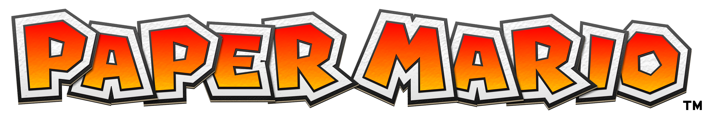
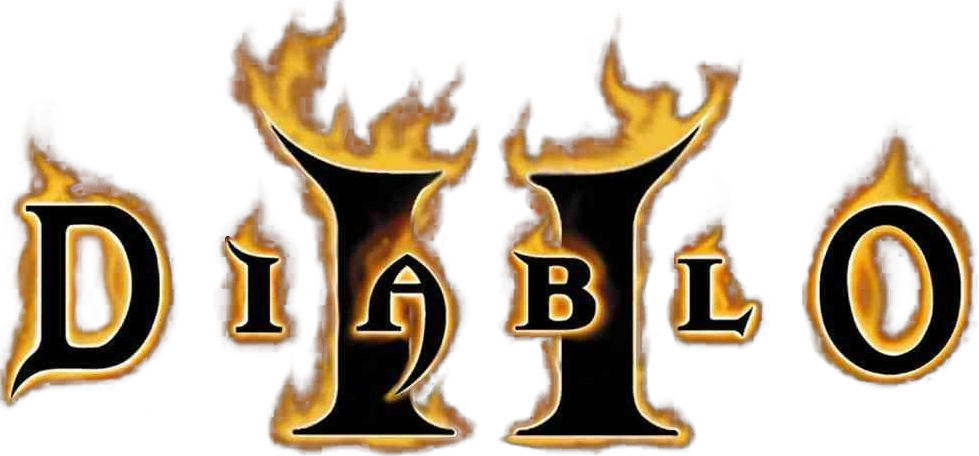

SGR - Your Source for Video Game News
Here at SGR (SimpleGameReviews), we cretique and review companies games the best way possible! Especially since 2000 is coming to an end.
So put on your reading glasses and grab some snacks, because were about to head into the review zone!
 3. 'Paper Mario.' Paper Mario is a role-playing video game developed by Intelligent Systems and published by Nintendo for the Nintendo 64 home video game console. To oversimplified what Paper Mario is all about, its your typical normal super mario game, but in a world where everything is paper. And yes, you have to save the princess and defeat the evil villian Bowser using the amazing tools and equipment the game gives you in order to finish the game. With the game still having its charm like the other Mario games but as well as changing the style, gameplay, and adding a possible new series to the franchise, we give Paper Mario THIRD place on our best 2000 games so far! 2. 'Diablo 2.' Diablo II is an action role-playing hack-and-slash video game developed by Blizzard North and published by Blizzard Entertainment in 2000 for Microsoft Windows, Classic Mac OS, and macOS. Set shortly after the events of Diablo, the player controls a new hero, attempting to stop the destruction unleashed by Diablo's return. The game's five acts feature a variety of locations and settings to explore and battle in, as well as an increased cast of characters to play as and interact with. We had a lot of fun playing the game, especially exploring around the area and giving us the freedom to cotrol our character freely. Which is why we give this game is placed for SECOND place on our best 2000 games so far!
 1. 'Final Fantasy IX.' Final Fantasy IX is a 2000 role-playing video game developed and published by Square for the PlayStation video game console. It is the ninth game in the main Final Fantasy series. The plot focuses on a war between nations in a medieval fantasy world called Gaia.
Final Fantasy IX is a turn-based RPG. Players navigate a character through the game world, exploring areas and interacting with non-player characters. Players wait their turn to attack, and then select the attack best suited to taking down their enemy. Call us nerds all you want, but this game got us to play it all day and all night. The story was easy to follow, we havent encountered any bugs, and it was worth our time and money!
Which is why we give Final Fantasy IX FIRST place on our best 2000 games so far! (Spoiler alert: we dont think a game can come close to this one.)
1. 'Final Fantasy IX.' Final Fantasy IX is a 2000 role-playing video game developed and published by Square for the PlayStation video game console. It is the ninth game in the main Final Fantasy series. The plot focuses on a war between nations in a medieval fantasy world called Gaia.
Final Fantasy IX is a turn-based RPG. Players navigate a character through the game world, exploring areas and interacting with non-player characters. Players wait their turn to attack, and then select the attack best suited to taking down their enemy. Call us nerds all you want, but this game got us to play it all day and all night. The story was easy to follow, we havent encountered any bugs, and it was worth our time and money!
Which is why we give Final Fantasy IX FIRST place on our best 2000 games so far! (Spoiler alert: we dont think a game can come close to this one.)
And those were the top 3 best games so far in 2000! We hope that you enjoyed reading our top 3 list and that you understand that these are just only thoughts and opinions. Comeback next time and maybe your favorite game might be on this list!